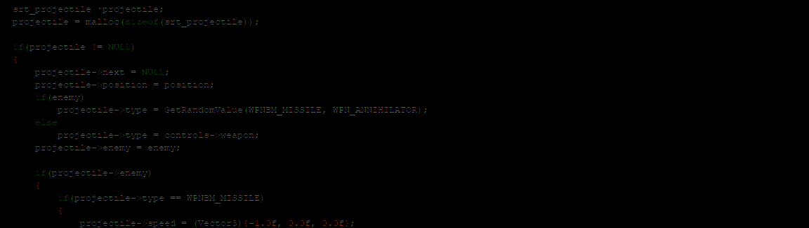

Project Heartbeat (cancelled)
Project Heartbeat was a sim racing video game being made by me as a way to apply my knowledge of SDL2, OpenGL and Vulkan in a practical project.
It was my largest personal project ever, since it's a vehicle simulation video game and a lot of the codebase would be either written from scratch or based on another open-source project.
I've been studying some existing libraries that deals with games, such as Raylib, exengine and Corange, in order to make something good for my own project.
The codebase was written almost entirely in C.
The project was cancelled and archived, due to several issues. Right now I'm waiting for SDL 3 to come and I'm learning other back-end tech so I will be able to work on an even larger project that I have in mind (a successor to this one).
This page is being kept for historic purposes. It'll be replaced as soon as the new project launches.